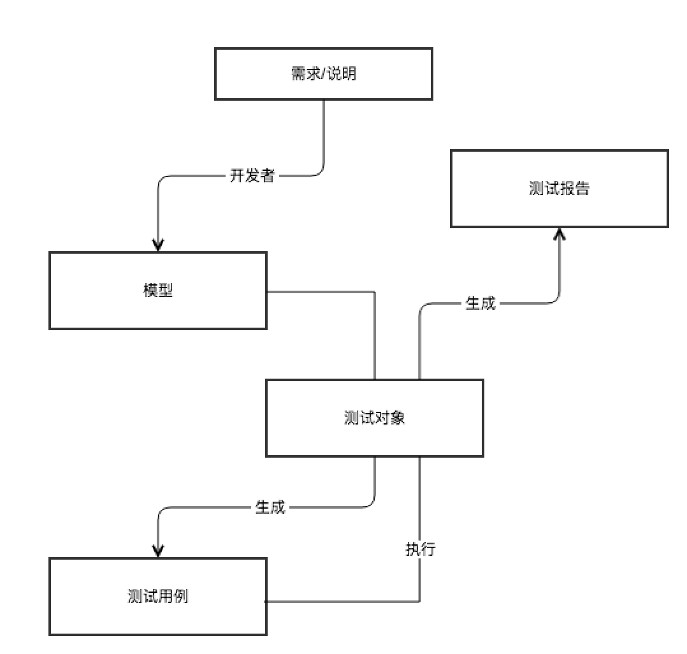
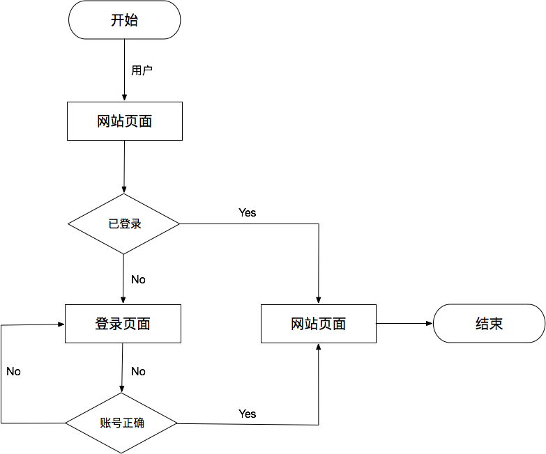

- 00 开篇词 从“小工”到“专家”，我的软件测试修炼之道.md
- 01 你真的懂测试吗？从“用户登录”测试谈起.md
- 02 如何设计一个“好的”测试用例？.md
- 03 什么是单元测试？如何做好单元测试？.md
- 04 为什么要做自动化测试？什么样的项目适合做自动化测试？.md
- 05 你知道软件开发各阶段都有哪些自动化测试技术吗？.md
- 06 你真的懂测试覆盖率吗？.md
- 07 如何高效填写软件缺陷报告？.md
- 08 以终为始，如何才能做好测试计划？.md
- 09 软件测试工程师的核心竞争力是什么？.md
- 10 软件测试工程师需要掌握的非测试知识有哪些？.md
- 11 互联网产品的测试策略应该如何设计？.md
- 12 从0到1：你的第一个GUI自动化测试.md
- 13 效率为王：脚本与数据的解耦 + Page Object模型.md
- 14 更接近业务的抽象：让自动化测试脚本更好地描述业务.md
- 15 过不了的坎：聊聊GUI自动化过程中的测试数据.md
- 16 脑洞大开：GUI测试还能这么玩（Page Code Gen + Data Gen + Headless）？.md
- 17 精益求精：聊聊提高GUI测试稳定性的关键技术.md
- 18 眼前一亮：带你玩转GUI自动化的测试报告.md
- 19 真实的战场：如何在大型项目中设计GUI自动化测试策略.md
- 20 与时俱进：浅谈移动应用测试方法与思路.md
- 21 移动测试神器：带你玩转Appium.md
- 22 从0到1：API测试怎么做？常用API测试工具简介.md
- 23 知其然知其所以然：聊聊API自动化测试框架的前世今生.md
- 24 紧跟时代步伐：微服务模式下API测试要怎么做？.md
- 25 不破不立：掌握代码级测试的基本理念与方法.md
- 26 深入浅出之静态测试方法.md
- 27 深入浅出之动态测试方法.md
- 28 带你一起解读不同视角的软件性能与性能指标.md
- 29 聊聊性能测试的基本方法与应用领域.md
- 30 工欲善其事必先利其器：后端性能测试工具原理与行业常用工具简介.md
- 31 工欲善其事必先利其器：前端性能测试工具原理与行业常用工具简介.md
- 32 无实例无真相：基于LoadRunner实现企业级服务器端性能测试的实践（上）.md
- 33 无实例无真相：基于LoadRunner实现企业级服务器端性能测试的实践（下）.md
- 34 站在巨人的肩膀：企业级实际性能测试案例与经验分享.md
- 35 如何准备测试数据？.md
- 36 浅谈测试数据的痛点.md
- 37 测试数据的“银弹”- 统一测试数据平台（上）.md
- 38 测试数据的“银弹”- 统一测试数据平台（下）.md
- 39 从小作坊到工厂：什么是Selenium Grid？如何搭建Selenium Grid？.md
- 40 从小工到专家：聊聊测试执行环境的架构设计（上）.md
- 41 从小工到专家：聊聊测试执行环境的架构设计（下）.md
- 42 实战：大型全球化电商的测试基础架构设计.md
- 43 发挥人的潜能：探索式测试.md
- 44 测试先行：测试驱动开发(TDD).md
- 45 打蛇打七寸：精准测试.md
- 46 安全第一：渗透测试.md
- 47 用机器设计测试用例：基于模型的测试.md
- 48 优秀的测试工程师为什么要懂大型网站的架构设计？.md
- 49 深入浅出网站高性能架构设计.md
- 50 深入浅出网站高可用架构设计.md
- 51 深入浅出网站伸缩性架构设计.md
- 52 深入浅出网站可扩展性架构设计.md
- 测试专栏特别放送 浅谈全链路压测.md
- 测试专栏特别放送 答疑解惑第一期.md
- 测试专栏特别放送 答疑解惑第七期.md
- 测试专栏特别放送 答疑解惑第三期.md
- 测试专栏特别放送 答疑解惑第二期.md
- 测试专栏特别放送 答疑解惑第五期.md
- 测试专栏特别放送 答疑解惑第六期.md
- 测试专栏特别放送 答疑解惑第四期.md
- 结束语 不是结束，而是开始.md
47 用机器设计测试用例：基于模型的测试
你好，我是茹炳晟。今天我和你分享的主题是：用机器设计测试用例之基于模型的测试”。
我在前面4篇文章中，和你分享的探索式测试、测试驱动开发TDD、精准测试，以及渗透测试的内容，你是否已经掌握了呢？有没有尝试将这些比较新的理念用到你的工程项目中呢？如果你在应用的过程中，遇到了任何问题，也欢迎给我留言一起讨论。
那么，现在我们就正式开始测试新技术系列的最后一个话题：基于模型的测试。
可以说，软件测试是一款软件产品质量的最后一道防线，是产品上线前必不可少、最重要的一个环节。每一款高质量的软件产品背后，都蕴含了大量的测试工作。而且，这些测试工作很可能是整个软件开发过程中最昂贵、劳动最密集的工作。
虽说从最简单的功能性黑盒测试，到涉及定理证明的复杂测试，已经有很多种方法可以帮助我们提高测试的可靠性和有效性。但是，在设计测试用例的过程中，总还是存在着这样那样的问题，使得软件测试的结果没那么理想。
为此，我们新引入了基于模型的测试，即Model-Based-Testing，简称MBT。
MBT，是自动化测试的一个分支。它是将测试用例的设计依托于被测系统的模型，并基于该模型自动生成测试用例的技术。其中，这个被测系统的模型表示了被测系统行为的预期，也可以说是代表了我们对被测系统的预期。
从质量保证的角度来看，我们可以制定测试内容，但却无法保证测试会覆盖所有可能的组合。而MBT则允许软件开发人员和测试人员，只关注建立系统的正确性以及模型的规范性，再通过专门的MBT工具根据不同的测试用例设计策略从系统模型生成可靠的测试用例。
那么，MBT的原理是什么，而什么样的应用又适合进行MBT呢？接下来，我就重点为你回答这两个问题。
MBT的基本原理
MBT的基本原理是通过建立被测系统的设计模型，然后结合不同的算法和策略来遍历该模型，以此生成测试用例的设计。
我用下面的一张图片，为你描述了MBT的过程：

图1 MBT的一般过程
如图1所示，开发者首先根据产品需求或者说明来构建模型，然后结合测试对象生成测试用例，测试用例针对测试对象执行完之后，生成测试报告比对测试结果。
接下来，我以简单的登录系统为例，和你说明如何建模。
当用户访问网站时，网站需要识别用户是否已经登录：
- 如果已经是登录状态，则让用户进入，结束这一分支；
- 如果用户还没有登录，那么页面需要返回登录框给用户。用户在登录框输入用户名和密码后，由后台服务验证用户名和密码是否正确，如果通过验证，则用户登录成功，结束分支；否则，返回错误信息，并再次返回登录框供用户登录。
根据这个逻辑，我们可以建模如下：

图2 网站登录系统建模
至此，我们就完成对这个登录系统的建模工作了。然后，我们通过具象化被测产品的需求行为，再通过工具来遍历模型中的各个路径，就可以得到我们需要的测试用例了。
所以，执行MBT的过程就好比你把软件系统的设计画为了一张由节点和边构成的数据结构意义上的“图”，然后通过一定的算法（比如，深度遍历或者广度遍历）来尽可能完整覆盖图中全部的可能路径的过程。
而根据被测系统的特点，我们可以创建不同类型的模型完成MBT。接下来，我们就一起看看有哪些常用的MBT模型吧。
常用模型简介
根据被测系统本身的特点，我们常用的模型主要有限状态机、状态图，以及UML三种。其中，有限状态机和状态图比较适合于用状态或者事件驱动的系统，而UML比较适合于靠业务流程驱动的系统。
第一，有限状态机。
有限状态机可以帮助测试人员根据选中的输入来评估输出，不同的输入组合对应着不同的系统状态。
在登录系统这个例子中，员工在未登录时的状态是“未登录”，一旦登录成功状态就会变为“已登录”。在已登录的状态下，员工可以访问各类资源，使用系统内的工具。
第二，状态图。
状态图是有限状态机的延伸，用于描述系统的各种行为，尤其适用于复杂且实时的系统。
状态图有一定数量的状态，系统的行为可以以事件的方式来驱动状态的变化。比如，缺陷管理工具中出现了缺陷，其初始状态为“new”；缺陷被开发人员修复后，就必须将其改为“Fixed”；但是，如果此时测试人员发现缺陷并未修复或者只是部分修复时，则需将状态更改为“Reopen”（重新打开）。
状态图的设计方式，要求为每个不同的状态创建一个事件。
第三，UML。
UML即统一建模语言，是一种标准化的通用建模语言。UML有自己定义的图形库，里面包含了丰富的图形用以描述系统、流程等。
UML可以通过创建可视化模型，来描述非常复杂的系统行为。
当我们完成被测系统的建模工作后，接下来就要将模型转化为可执行的测试用例了。这个转换过程，需要借助工具来完成。
因为不同领域的产品风格迥异，其使用的自动化框架和编程语言也各不相同，所以我们需要花费一些精力去寻找与自己产品匹配的MBT工具。其实，在很多情况下，我们还需要根据产品特点，去自行开发和定制工具。
MBT工具简介
这里，我为你罗列了一些常见的MBT工具，包括：BPM-X、fMBT、GraphWalker。在这里，我为你简单介绍这些工具的目的是，让你可以对MBT工具本身有个感性的认识，让你知道此类工具的应用场景和上下文。至于说如何来选择使用这些工具，这在很大程度上取决于被测系统的特点。
第一，BPM-X
BPM-X根据不同的标准（比如，语句、分支、路径、条件）从业务流程模型创建测试用例。
它还可以从多个建模工具导入模型，并可以将测试用例导出到Excel、HP Quality Center等。这个工具，适用于业务流程比较清晰直观的场景。
第二，fMBT
fMBT是一组免费的、用于全自动测试生成和执行的工具，也是一组支持高水平测试自动化的实用程序和库，主要被应用在GUI测试中。
fMBT包括用于多平台GUI测试的Python库，用于编辑、调试、运行和记录GUI测试脚本的工具，以及用于编辑和可视化分析测试模型和生成的测试工具。
第三，GraphWalker
GraphWalker以有向图的形式读取模型，主要支持FSM、EFSM模型。它读取这些模型，然后生成测试路径。GraphWalker除了适用于GUI测试外，更适合于多状态以及基于事件驱动的状态转换的后台系统。
另外，GraphWalker还支持从有限状态机中生成测试用例。
除此之外，市面上还有很多MBT测试工具，比如GSL、JSXM、MaTeLo、MBT Suite等。这里就不再一一介绍了，你可以自行百度了解它们的特点和适用场景，从而选取合适自己的工具。
MBT的优势
其实，MBT并不能算是一种新颖的测试技术，早在七八年前就已经被提了出来并且试图应用于软件产品的测试工作中。但是，MBT在很长一段时间内，却一直停留在概念阶段，主要原因是一直没有普适的工具支持，所以很少有成功实施的实际案例。同时，业界一直以来都缺乏高效的测试用例设计生成策略，所以虽然大家都能看到MBT的优势，但能在实际项目中应用执行的却是寥寥无几。
与传统测试相比，MBT的优点如下：
测试用例的维护更轻松。由于测试用例是基于被测系统的模型生成的，因此我们只需维护好模型即可，而无需关注测试用例的细节。
软件缺陷发现得更早。由于我们在构建被测系统模型的过程中，已经对被测系统有了比较全面的理解，加之要根据系统需求/说明完成建模过程，所以我们可以在早期建模时发现被测系统可能存在的明显缺陷，而不用等到执行了大量的测试用例以后才发现这些缺陷。
测试自动化的水平更高。由于MBT只需建好模型便可以自动生成测试用例，所以不再需要人工编写测试文档。而更高级的应用，甚至可以直接生成可以直接执行的自动化测试脚本。
测试覆盖率变得更高，使得彻底的测试（即：穷尽测试）成为了可能。由于我们需要做的只是正确、详尽地用模型描述被测系统，而生成测试用例完全由MBT工具实现，所以这就避免了人工设计测试用例时的思维局限性，能够有效地提高测试覆盖率，让彻底的测试变为可能。- 当然，是否有必要开展彻底的测试还是要由风险决定。这里的风险指的是，由于漏测导致产品问题对业务的影响程度。MBT只是从技术上提供了可能性。
基于模型间接维护测试用例的方式更高效。在传统测试中，如果被测系统的流程或者功能发生了变化，我们需要耗费大量的人力和时间成本，去重新设计与之匹配的测试用例。而在MBT中，我们只需要更新被测系统的模型即可，剩下的测试用例生成工作可以由MBT工具自动完成。
MBT的劣势
虽然MBT相对于传统测试有很多优点，但它也不是完美的测试方案。在实际开展MBT时，我们往往需要应对很多挑战，并克服很多困难。所以，到现在为止，MBT并没有被广泛使用于软件测试领域。
在这里，我总结了开展MBT的三大难点：
学习成本较高。MBT要求开发人员和测试人员都精通建模，这就需要一定的培训成本，需要让开发人员去学习测试的技能，让测试人员去学习建模概念。这其中还牵涉到建模工具的选择，以及学习等成本。
使用MBT的初期投资较大。在很多情况下，我们并不能找到适合自己产品的建模工具，而需要自行创建MBT工具。- 在自行定制MBT工具时，我们要考虑到这个工具必须是可扩展的，并且能够处理复杂的测试逻辑，提供足够高的测试覆盖率，因此刚开始的工具建设就需要花费大量时间和精力。- 更糟糕的情况是，当工具建好后，我们却发现它并不能满足所有的建模需求，因此还要在建模的同时对工具进行微调。而，这种微调工作的难度，也比较大。
早期根据模型生成测试用例的技术并不是非常成熟。很多时候只是根据图论的算法来遍历模型，这就会导致生成的很多测试用例在业务上根本没有任何实际意义，也因此阻碍了MBT在实际项目中的落地。- 不过好在近一两年来，基于人工智能（AI）生成测试用例的概念不断成熟，所以将基于AI的测试用例生成和MBT相结合，将会是接下来的一个发展方向。
总的来说，MBT和传统测试各有优劣。所以，测试的方法多种多样，MBT只是其中的一种。
如果一个应用的任何组件都可以通过模型来模拟、通过驱动程序来驱动，并可以通过测试结果来比较的话，那么这个应用就是MBT的最佳候选者。
如果我们的产品特征符合开展MBT的要求，并且团队各方面的条件都支持使用MBT时，我们便可以尝试用这种方法来改革我们的测试方式。尤其是将MBT结合基于AI的测试用例生成技术，将可以大大加速MBT产业应用的步伐。
但是，不管是否采用MBT，开发人员或测试人员在接触到一款软件产品时，首先都会有一个心理建模的过程，自己先去理解并在脑中勾勒出系统的功能结构和流程。其实，这些内容很容易就可以转换成实际的模型，也就为MBT创造了条件。
总结
今天，我和你分享了MBT的基本概念和方法。
MBT是一种基于被测系统的模型，由工具自动生成测试用例的软件测试技术。所以，这也就决定了MBT相对于传统测试技术可以在测试用例维护、软件缺陷发现时机、测试自动化水平，以及测试覆盖率等方面有其独到的优势。
但同时，这也使得MBT相对于传统软件测试，在初期阶段投入较大，学习应用的成本较高。也正因为如此，MBT概念虽然已经提出了七八年的时间，但却并没有被广泛应用于软件测试领域。
所以，关于是否要在自己的项目中开展MBT，我们需要综合考虑项目本身的特点和人员的技术水平，以此决定是否有必要开展MBT。
思考题
假如你要在项目中开展MBT，你会如何判断你的项目是否适合采用MBT，以及你认为会遇到哪些问题可能会阻碍MBT的开展呢？
感谢你的收听，欢迎你给我留言一起讨论。
© 2019 - 2023 Liangliang Lee. Powered by gin and hexo-theme-book.